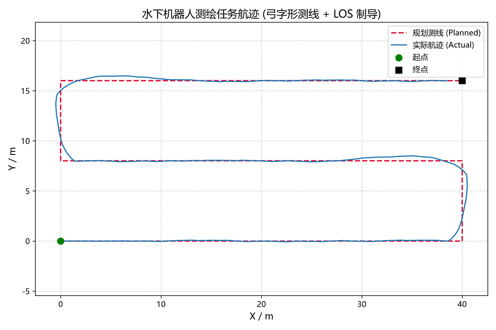
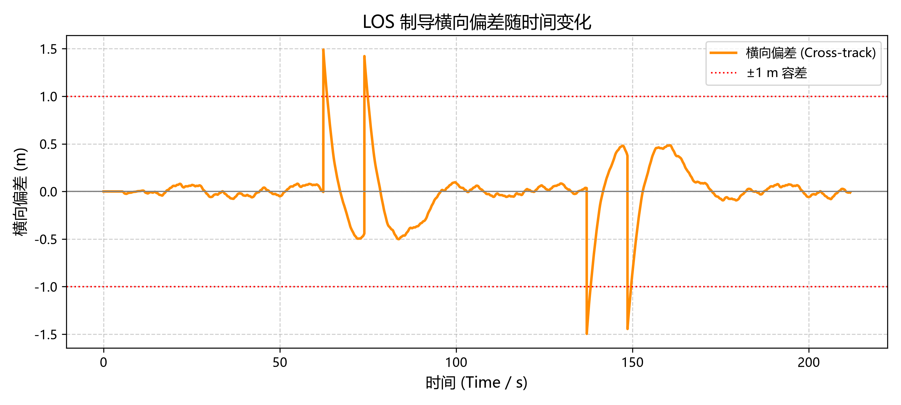
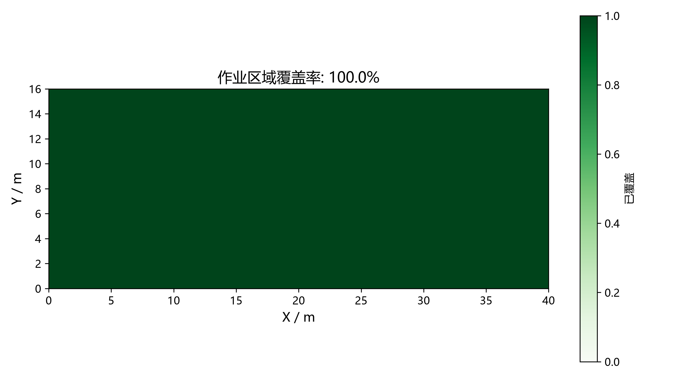

水下机器人测绘任务仿真
基于 MuJoCo 的水下测绘任务层，实现 弓字形测线规划 → LOS 制导 → PI 速度/艏向控制 + 深度 PID → 覆盖率评估 的完整闭环，可脱离 Unreal 引擎单独运行。
与已有的 underwater_sim.py（基础流体/浮力/阻力/PID 悬浮）互补：那个脚本回答“ROV 在流体里怎么动”，本示例回答“ROV 怎么把一个作业区域扫完”。
功能组成
| 模块 | 文件 | 说明 |
|---|---|---|
| 路径规划 | src/underwater/survey_mission.py |
弓字形（lawnmower）测线生成，支持任意朝向与起点 |
| 制导 | 同上，LOSGuidance |
视线法（Line-Of-Sight）跟踪，输出期望艏向与横向偏差 |
| 覆盖评估 | 同上，CoverageTracker |
栅格化统计声呐扫幅对作业区域的覆盖比例 |
| 任务指标 | 同上，evaluate_mission |
横向偏差 RMS/峰值、航程、耗时、覆盖率 |
| 仿真 | src/underwater/survey_mission_sim.py |
MuJoCo 闭环仿真、控制律、数据记录与绘图 |
| 单元测试 | src/underwater/tests/test_survey_mission.py |
纯数学部分测试（不依赖 MuJoCo） |
原理
1. 覆盖路径规划
测线沿作业区域局部 X 方向往返，相邻测线沿 Y 方向等距排布：
其中 为区域宽度、 为期望测线间距。取整后再均分，保证实际间距不超过设定值，且最后一条测线正好落在边界上。
路径点会随规划整体旋转 heading 并平移到 origin，因此可以直接把作业区摆到世界坐标的任意位置。
2. LOS 制导
把当前位置 投影到当前测线段 上得到垂足 ，横向偏差定义为叉积：
路径左侧为正、右侧为负。前视点取 （且不越过 ），期望艏向为
当存在横向偏差时，前视方向自然指向测线，形成回中趋势；前视距离 越大越平缓、越小越激进。
3. 控制律
- 水平速度环（PI）：把期望速度 与实际世界系速度做差，输出世界系推力，再投影到机体系限幅（模拟推进器能力上限）后转回世界系：
积分项用于抵消 MuJoCo 椭球流体模型带来的二次阻力（纯 P 控制会留下明显的稳态速度误差）。
-
艏向环（PD）：，力矩限幅 。
-
深度环：复用
depth_controller.PIDDepthController，叠加静态浮力 前馈。
4. 覆盖率
作业区域被离散成 grid_resolution 见方的栅格，ROV 每走过一段航迹，就把以航迹点为圆心、直径 swath_width（声呐扫幅）的圆内栅格标记为已覆盖，段内按半格插值避免漏格。
工程上测线间距应略小于扫幅（即保留 10%–25% 的重叠率），否则跟踪误差会在测线交界处留下未覆盖的条带。
运行
cd src/underwater
pip install mujoco numpy matplotlib
# 无界面运行（保存航迹 CSV 与结果图）
python survey_mission_sim.py
# 同时打开 MuJoCo Viewer 观察
python survey_mission_sim.py --viewer
输出：
docs/img/underwater/survey_trajectory.png—— 规划测线 vs 实际航迹docs/img/underwater/survey_cross_track.png—— 横向偏差曲线docs/img/underwater/survey_coverage.png—— 覆盖率栅格图docs/img/underwater/survey_track.csv—— 时间、位置、速度、横向偏差
实测结果
默认配置（40 m × 16 m 作业区、测线间距 8 m、航速 1.0 m/s、目标深度 −5 m）：
| 指标 | 数值 |
|---|---|
| 覆盖率 | 100.0 % |
| 横向偏差 RMS | 0.276 m |
| 横向偏差峰值 | 1.496 m（出现在测线末端的 180° 掉头处） |
| 实际航程 / 规划航程 | 131.9 m / 136.0 m |
| 任务耗时 | 211.7 s |
| 是否完成 | 是 |

掉头时因为要同时完成减速转向，横向偏差会短时冲到 1.5 m 左右；直线段上偏差稳定在 ±0.2 m 内。


配置项
src/underwater/data/config.json 中的 survey_mission 段：
| 字段 | 含义 |
|---|---|
area_width / area_height |
作业区域尺寸 (m) |
lane_spacing |
期望测线间距 (m) |
origin / heading |
作业区域位置与朝向 |
target_depth |
测绘深度 (m，负值) |
cruise_speed |
巡航速度 (m/s) |
lookahead |
LOS 前视距离 (m) |
accept_radius |
路径点切换半径 (m) |
timeout_seconds |
仿真超时 (s) |
swath_width |
声呐扫幅 (m)，建议取 lane_spacing × 1.1 ~ 1.25 |
grid_resolution |
覆盖率栅格边长 (m) |
controller.* |
速度环 / 艏向环增益与限幅 |
单元测试
cd src/underwater
python -m pytest tests/ -v
覆盖测线生成（边界、间距、蛇形交替、旋转平移、非法输入）、LOS 制导（偏差符号、回中趋势、航点切换）、覆盖率统计与指标汇总，共 14 个用例。